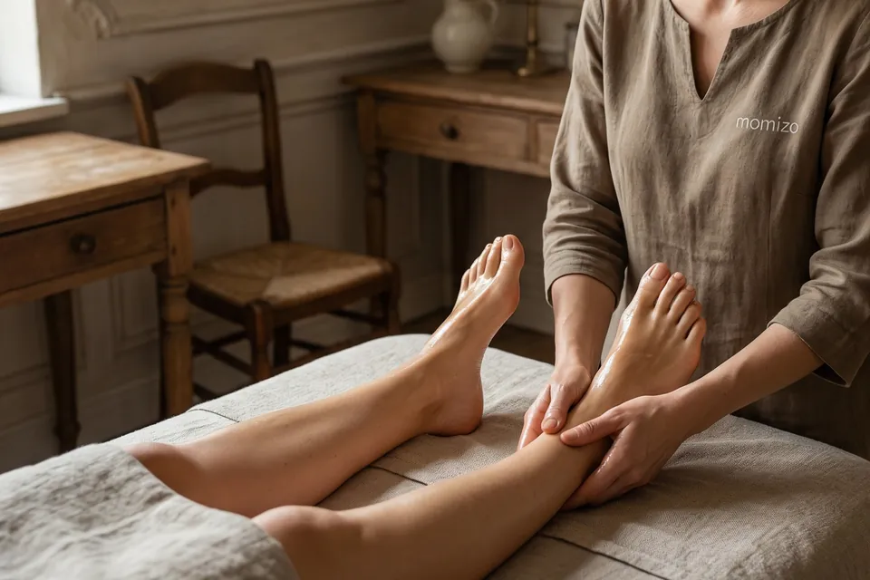

ボディコースもみほぐし
肩や首、腰、背中、脚など、気になるところを中心に丁寧にもみほぐすコースです。力加減は、お好みに合わせて調整します。ほぐす範囲は、60分で半身、90分からは全身が目安です。
税込・円
- 30分2,000
- 60分3,900
- 90分5,800
- 120分7,700
選べるコース、続けやすい価格。
もみほぐし、ドライヘッドスパ、足つぼ・リフレクソロジーの3つの施術を、単独や組み合わせでご用意しています。気になるところだけを短くほぐしたい方から、全身をじっくりケアしたい方まで、ご希望やお疲れに合わせてお選びください。時間は30分から120分までで、選べる時間はコースによって異なります。
肩や首、腰、背中、脚など、気になるところを中心に丁寧にもみほぐすコースです。力加減は、お好みに合わせて調整します。ほぐす範囲は、60分で半身、90分からは全身が目安です。
税込・円
オイルを使わずに、頭から首、胸元をほぐすコースです。お好みで、お顔もほぐします。頭まわりをじっくりケアしたい方や、ゆっくりリラックスしたい方におすすめです。60分からは、もみほぐしも組み合わせます。
税込・円

足裏を中心に、オイルを使ってほぐすコースです。立ち仕事や歩くことが多い方、足の疲れやだるさが気になる方におすすめです。60分からは、もみほぐしも組み合わせます。
税込・円
足つぼ・リフレクソロジー、ドライヘッドスパ、もみほぐしの3つを組み合わせたコースです。90分から、頭から足まで全身をじっくりケアします。ゆったりとした時間をお過ごしください。
税込・円
税込・円